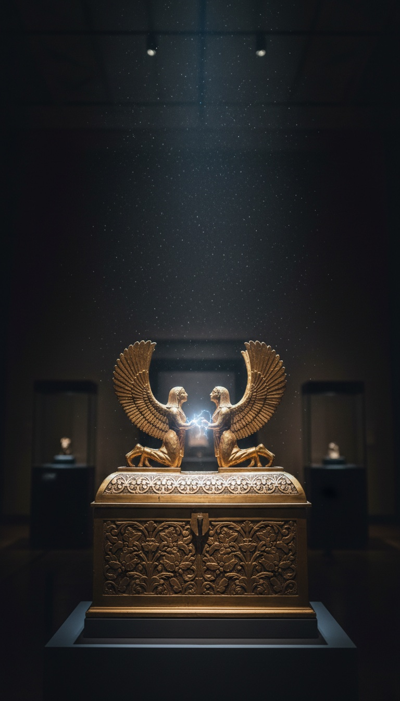

The fat winged toddler on your grandmother's Christmas card is a Renaissance invention, and the Hebrew Bible describes something else entirely: an object God rides, sits between, speaks from, and stations at doorways with a rotating weapon.
Strip away fifteen centuries of art history and read only what the text says cherubim do. They fly with a rider aboard. They flank a seat. They guard a gate alongside a sword that turns by itself. They sit on a gold-plated box that killed a man for touching it. That is not a description of an angel. That is a spec sheet.

Two Books, One Flight Record
Psalm 18:10 in the King James text reads: "And he rode upon a cherub, and did fly: yea, he did fly upon the wings of the wind." The identical event appears in 2 Samuel 22:11, nearly word for word. When two separate books of a canon preserve the same account with the same mechanical details, that is not poetry repeating itself. That is a report copied into two archives. And read the surrounding verses of Psalm 18 as a sequence: smoke, devouring fire, darkness under his feet, thick clouds passing, hailstones and coals of fire, then flight on the wind. Exhaust, ignition, obscured visibility, debris, ascent. The psalmist logged a launch and had no word for it except riding.
Seven Times, One Fixed Address
The Bible gives God a physical station and repeats it seven times: "enthroned between the cherubim." You can count them yourself. 1 Samuel 4:4. 2 Samuel 6:2. 2 Kings 19:15. Isaiah 37:16. Psalm 80:1. Psalm 99:1. 1 Chronicles 13:6. The Hebrew phrase is yoshev ha-keruvim, the one who sits on the cherubim. Nobody assigns a metaphor a seat. A throne flanked by two named components, referenced across seven books by different authors in different centuries, is a piece of equipment whose configuration everyone knew. The scribes were not describing a feeling. They were describing where the operator sat.
The Sentry at Eden's Gate
Genesis 3:24 stations cherubim at the east of Eden together with "a flaming sword which turned every way, to keep the way of the tree of life." The Hebrew participle is mithappeket, continuously turning, self-rotating. A blade of fire that revolves on its own, paired with cherubim, posted at a single access point, with one job: deny entry. No sleep cycle, no relief shift, no supply line mentioned, because none was needed. Every ancient culture that guarded a doorway posted men or statues. Genesis posts a rotating energy weapon. You do not borrow that image from a neighbor's temple. You remember it.
The Box That Killed a Man
Exodus 25:10-22 gives the Ark of the Covenant's build spec: acacia wood overlaid with pure gold inside and out, two gold cherubim facing each other on the lid, and a stated function in verse 22, "there I will meet with thee, and I will commune with thee from above the mercy seat, from between the two cherubim." A designated communication point between two matched components. Then in October 1745, Ewald Georg von Kleist built the first capacitor, and Pieter van Musschenbroek at Leiden replicated it months later as the Leyden jar. The design principle: an insulating layer sandwiched between two conductive layers, storing charge until something completes the circuit. Wood between two layers of gold is that exact architecture. The Ark was carried on poles, never by hand, and the one man recorded touching it directly, Uzzah at the threshing floor of Nachon in 2 Samuel 6:6-7, dropped dead on the spot. The priests who serviced it wore linen by command, Exodus 28:39-43, under penalty of death for doing it wrong.
Wood between two layers of gold. Touch it wrong and you died. Ask Uzzah.
Ezekiel Wrote the Maintenance Manual
In 593 BC, by the Chebar canal in Babylon, the priest Ezekiel recorded the most detailed cherub description in the entire canon, and it reads like an inspection report. Four faces per unit. Legs that "sparkled like the colour of burnished brass," Ezekiel 1:7. Wheels constructed "as it were a wheel in the middle of a wheel," 1:16, that moved in any direction without turning. Rims "full of eyes round about," 1:18. A sound in motion "like the noise of great waters," 1:24. And in Ezekiel 10:20 he closes the identification himself: "I knew that they were cherubims." Ezekiel was a temple-trained priest, a professional describer of ritual objects, giving you materials, articulation, propulsion, and acoustics. Angels do not have a brass finish. Fabricated things do.
Who Turned the Machines Into Toddlers
The image collapse has names and dates. Donatello carved the Cantoria for Florence Cathedral between 1433 and 1439, now in the Museo dell'Opera del Duomo, covered in dancing chubby infants. Raphael painted the Sistine Madonna in 1512, now in the Gemäldegalerie Alte Meister in Dresden, and the two bored toddlers leaning on its lower edge became the most reproduced "cherubs" on earth. Those figures are putti, recycled Roman Erotes, cupids from a pagan art tradition with zero connection to the Hebrew keruvim. Scholars answer that the cherub itself was borrowed, that kerub comes from the Akkadian karibu and the image from the winged lamassu guardians of Assyria, like the colossal pair Austen Henry Layard pulled out of Nimrud in 1847 and shipped to the British Museum. Look at those lamassu. They are stone. They stand at doorways. They do not fly, they carry no rider, they flank no functioning communication seat, and no Assyrian text records one killing a man on contact. A borrowed image decorates. The Hebrew record assigns cherubim jobs: flight platform in Psalm 18, throne mount in seven books, armed sentry in Genesis, discharge hazard in 2 Samuel, articulated wheeled units in Ezekiel. Symbols do not hold down jobs. Hardware does.
Now track the hardware itself. After Babylon burned Jerusalem in 586 BC, the Ark vanishes from the record. 2 Maccabees 2:4-8 says the prophet Jeremiah carried it to a cave on Mount Nebo and sealed the entrance, and that the location would stay hidden "until the time that God gather his people again." The Ethiopian Orthodox Church says something stronger: that the Ark sits today inside the Chapel of the Tablet at the Church of Our Lady Mary of Zion in Axum, watched by a single guardian monk who is appointed for life, never leaves the grounds, and lets no one see it. Not scholars, not presidents, not film crews.
So hold both facts at once. The most technically described object in the Hebrew Bible, the one built to military tolerances with two cherubim mounted on top, is the one object nobody is allowed to examine. Every other biblical artifact gets a museum case and a placard. This one gets a lifetime guard. If the cherubim were only borrowed Assyrian decoration, what exactly is that monk guarding? Say it in the comments, because somebody in Axum already knows.
Before you go
7 books the Vatican doesn't want you reading. Free PDF — the texts they cut, with sources. Joined by 140+ Inner Circle members.
No spam. Unsubscribe anytime.
Go deeper
The Hidden Canon, Vol. I — Enoch. Jubilees. Thomas. Mary. Judas. 90 pages, 14 chapters, every receipt cited. The books your Bible quietly removed.
Read the Canon →Books that informed this investigation
As an Amazon Associate, Hidden Epoch earns from qualifying purchases. Cost to you: nothing.
Research safely
The VPN we use to research without being tracked. First 3 months free.
Get NordVPN →